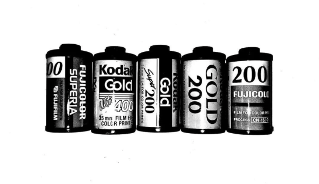
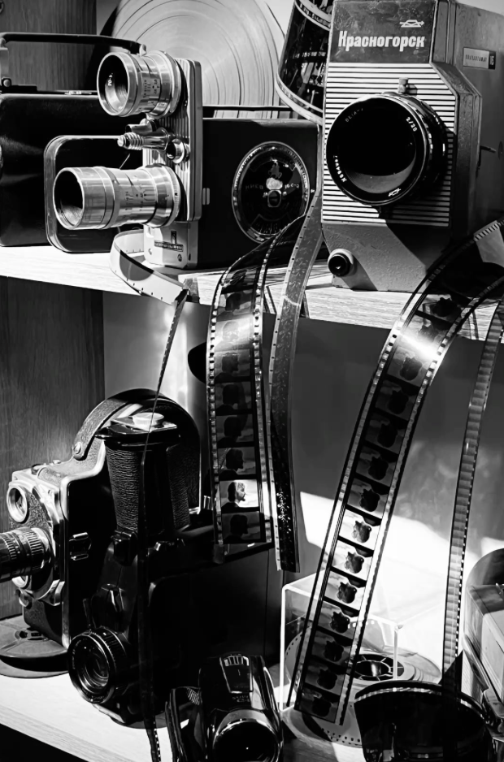

Étudiante en deuxième année à KEDGE Business School et passionnée de photographie, je souhaite faire de l'art un moyen d'expression engagé.
Beyond Woman est une exposition photographique qui donne une voix visuelle aux femmes touchées par la maladie, le handicap invisible ou des épreuves personnelles. À travers des portraits artistiques et des témoignages authentiques, le projet met en lumière leur douleur, mais aussi leur force et leur résilience.

Rencontrer des femmes volontaires et recueillir leur histoire dans un climat de confiance et de bienveillance.

Créer un concept artistique personnalisé et réaliser un shooting argentique en noir et blanc pour chaque participante.
Partager ces récits avec le public et reverser les bénéfices à des associations qui accompagnent ces femmes.
Octobre 2026
Une première exposition dédiée aux femmes qui se battent contre le cancer du sein, pour sensibiliser le public et rendre hommage à leur courage.
7 mars 2027
La grande exposition finale, consacrée aux différentes formes de souffrances invisibles et aux parcours de résilience des participantes.
Vous souhaitez partager votre histoire ou soutenir Beyond Woman ? Laissez-nous un message.